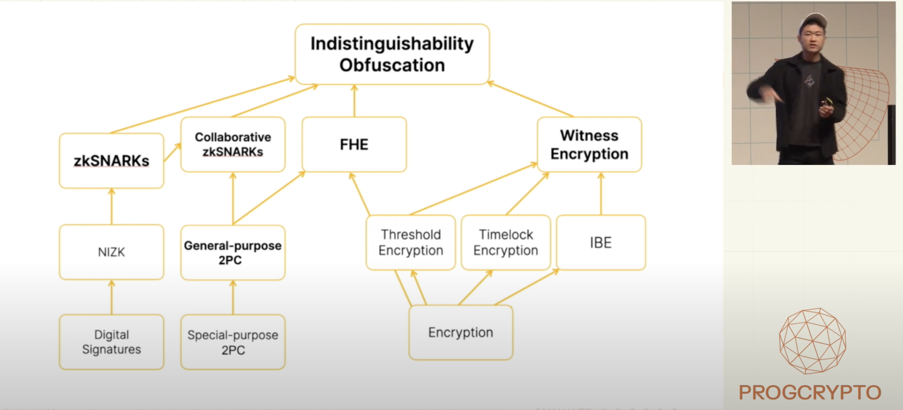
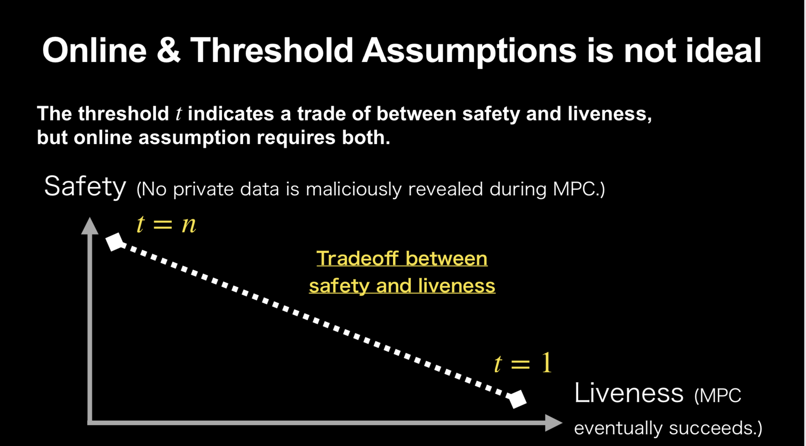

Devcon key insight: indistinguishability obfuscation
The key insight from Devcon 7 is that Indistinguishability Obfuscation (iO) is closer than I expected. Last year, at Devconnect, iO was presented as a "very, very incomplete" technology at the root of the cryptographic techniques dependency tree. iO can be used to derive any other primitives in the tree. Because of that, it is often deemed as the holy grail or endgame of cryptography.

One year later, the attitude towards iO has changed:
- Sora is working on an iO implementation based on standard assumptions
- Gauss Labs is working on a iO implementation based on nonstandard assumptions and has opened a bounty to break its security
- Further presentations from Barry Whitehat, Janmajaya Mall, and Vitalik Buterin illustrate practical applications that can be built using iO.
I'm wondering: did a major scientific breakthrough lead to renewed confidence in iO, or are they promoting confidence to help make that breakthrough happen? Either way, they got my attention.
What is iO - informal definition
iO allows to encrypt (or obfuscate) a program such that the obfuscated program performs the exact same functionalities as the original program without revealing any information about its internal structure. To be even more informal, you can assume the existence of an iO compiler that takes a program, expressed as an arithmetic circuit, as input and returns its obfuscated version. More importantly, the obfuscated program can contain a secret key and the logic to perform various cryptographic operations such as signature or decryption. Such programs can be copied and distributed to people without any fear of leaking the obfuscated data.
What is iO - formal definition
If two programs $P$ and $Q$ compute the same function (are functionally equivalent), their obfuscated versions $P_{ob}$ and $Q_{ob}$ should be computationally indistinguishable. An intuitive example to understand such security definition is provided by Vitalik:
- $P$: Program that contains key $k$ and computes $sign(k, m)$ for $m \in [1...n]$
- $Q$: Program that contains a lookup table of all $n$ pre-computed signatures using $k$
Even though $P$ and $Q$ use completely different methods, their obfuscated versions should be indistinguishable according to the security definition. The beauty of this definition is that it captures our intuitive notion of "hiding the inner workings" in a strong, formal way: if you can't even tell which of two known implementations was used, you certainly can't learn anything about how the implementation works.
Voting app with iO
To practically understand what you can do with iO, let's analyze how it can be used to construct a voting application that keeps the individual votes private and only reveals the final tally. This section extends the analysis performed by Vitalik in his recent blog post. The logic of the tally is the following:
def vote(choice): # choice is either yes (1) or no (0)
yes_votes += choice
no_votes += (choice + 1) % 2
Intuitively, this could be designed using Homomorphic Encryption: votes are submitted in an encrypted form, and the tallies yes_votes and no_votes are computed homomorphically, namely, without having to decrypt the vote first. After the election is over, the tallies are decrypted, and the winner is announced. The biggest issue is the ownership of the decryption key. Outsourcing the control of the decryption key to a single individual is the least secure approach as he/she could silently decrypt any partial tally before the end of the process, learning precious information about the individual preferences and the trend of the election. On the other side of the spectrum, the decryption key can be split among the $n$ voters such that a contribution from each of them is required to decrypt the output once the election is over: this approach guarantees full security, but it is also very fragile since it only requires a single voter to drop-off or lose their decryption key share to make it impossible to recover the output.
In practice, similar applications rely on a committee holding shares of the decryption key where only a threshold of them is required to perform any decryption operation accepting a tradeoff between security and liveness assumptions. This setup still poses the risk of collusion between committee members to collude and silently decrypt partial states, although there are proposals to add accountability for misbehavior.

iO allows us to break this tradeoff, obtaining maximum safety without requiring any liveness assumption for the protocol to successfully conclude. A (very inefficient) version of the desired voting app can be therefore constructed as follows:
-
Run a public trusted setup open to everyone where each party will contribute with some randomness to generate the FHE key pair encryption (public) key $p_k$ and the underlying decryption (secret) key $s_k$. As part of the trusted setup, the randomness will also contribute to the generation of an obfuscated program $O$. The logic of the program is the following:
if verify(π, ct) == true: return decrypt(ct, s_k) else: return 0In practice, the input of the obfuscated program is the ciphertext $ct$ to be decrypted and a proof of blockchain consensus $\pi$ that exists some smart contract application logic that authorizes the decryption of the ciphertext $ct$. $s_k$ is embedded into this obfuscated program such that it performs the decryption of the provided only if the proof $\pi$ verifies. $p_k$ and $O$ are the public outputs of the setup phase, while the decryption key $s_k$ is never seen by anyone.
-
The logic of the voting application, as defined before, is encoded into a smart contract. The voting process finishes at block $999$. People have to encrypt their votes under $p_k$ and submit their ciphertexts to a smart contract together with a proof of plaintext knowledge. The contract homomorphically updates the tally according to the logic defined before.
-
After block $999$, no more votes are accepted; the tally is frozen and should now be decryptable. The input of the obfuscated circuit $O$ are the encrypted tally $ct$ and a proof $\pi$ that proves, according to the blockchain consensus, that the ciphertext can be decrypted (i.e. the election is over). If the proof verifies, $O$ returns the tally of the election in an encrypted format. Since the obfuscated circuit is public, anyone can locally re-run the evaluation $O(\pi, ct)$ and check that the tally is correct.
This design effectively kills any interaction required during the decryption phase. The security assumption is that at least one of the participants of the trusted setup is honest and wastes their random input after their ceremony contribution. Furthermore, any attacker that wants to decrypt any partial tally state will fail since they won't be able to produce a proof of blockchain consensus that authorizes its decryption and will, therefore, be rejected by the obfuscated program $O$.
Is this construction secure?
An attacker might be interested to learn the partial tally before the election ends to influence it or learn specific individuals' votes. Since this information, in its encrypted form, is publicly available, an attacker can fetch it and try to trick the obfuscated program $O$ into decrypting it. To do that, they require a valid proof of blockchain consensus $\pi$.
A "simple" attack would be to create a new smart contract that performs a homomorphic identity function over a specific vote ciphertext and authorizes the decryption of the output. One way to avoid that is to force any proof of plaintext knowledge behind a ciphertext to contain the address of the smart contracts that are authorized to consume such ciphertext.
A further attack requires the majority of validators to collude and sign a state that allows the decryption of a ciphertext against the rules defined in the smart contract. This attack can happen silently, and slashing the malicious validators might not be possible. I don't have a valid solution for that.
Further applications
The previous construction can be extended to many other applications. The whole set of multi-party applications can be made collusion-resistant (under the trusted setup assumption) while providing non-interactive decryptions. Examples are auctions, encrypted mempools, AI model training, or multilateral trade credit set-off. Another interesting application relates to the further succintization of zkSNARKs: the iO obfuscated circuit can be designed to verify a proof $\pi$ and sign the statement that it proves iff the proof verifies. In such a scenario, verifying a proof is equivalent to verifying a signature, making it extremely gas-efficient. Since iO basically allows blockchain programs to hold secrets, all the use cases listed in section 5 of the paper "Can a Public Blockchain Keep a Secret?", such trustless cross-blockchain token bridges, are enabled.
Conclusions
If iO is a new concept for you, as it is for me, you might be feeling super thrilled after reading this article. The reality, according to the experts, is that such iO constructions are far from usable in practice. I am curious to see the concrete results from the works of Sora, based on standard security assumptions and, therefore, likely very, very slow, and Gauss Labs, based on non-standard (less battle-tested) security assumptions, and likely faster. On my side, I will spend the next months trying to demystify the topic and publish what I have learned on this blog.